Consulter, se perdre, trouver
Ce site, réalisé avec Astrid Chabot, a pour but de recueillir divers mémoires du master DCDG du Campus de la Fonderie de l'Image.
⁂ Le but est de créer une archive vivante et ambivalente. Afin de rechercher dans un site comme celui-ci, il nous a semblé évident qu’une double lecture était nécessaire : une lecture en image pour les curieux souhaitant se perdre et voulant fonctionner au hasard ; et une recherche par liste avec de nombreux filtres afin de trouver sa réponse du premier coup (ou presque).
⁂ Cette dualité est mise en avant par un jeu de lumière : fond noir/fond blanc.
▷ Expérimentation web
▷ Font : Heebo de Christian Roberton et Oded Ezer
▷ Janvier 2022
consulter, se perdre, trouver
 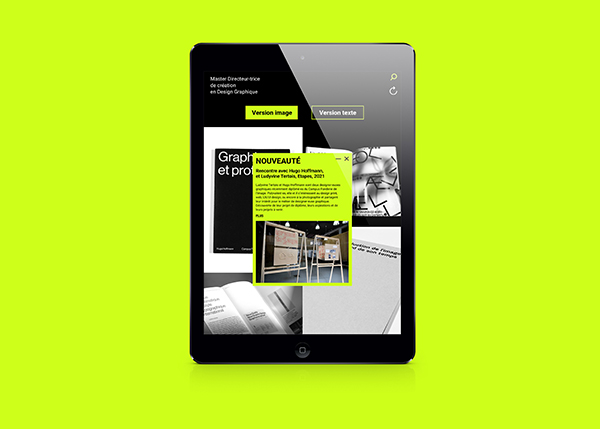
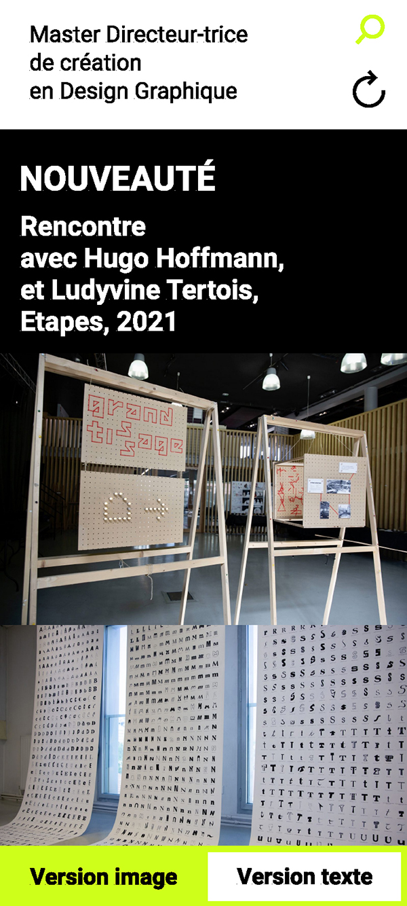
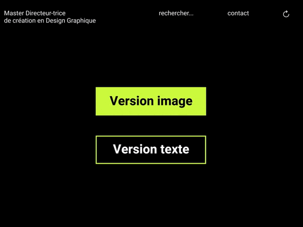
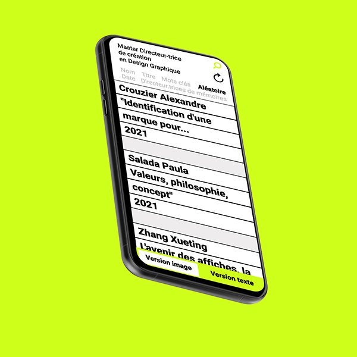
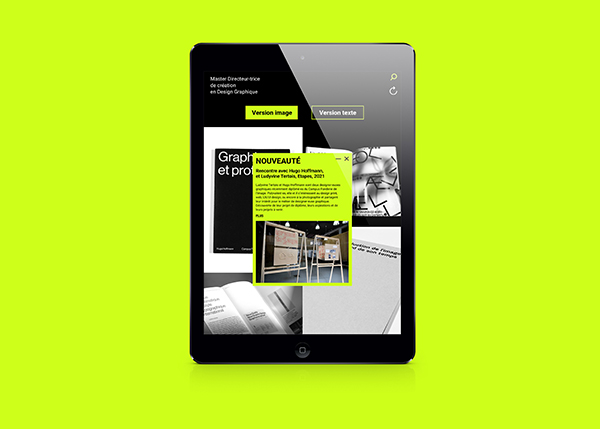
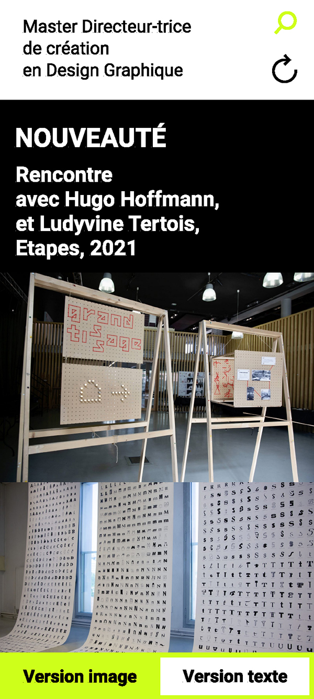
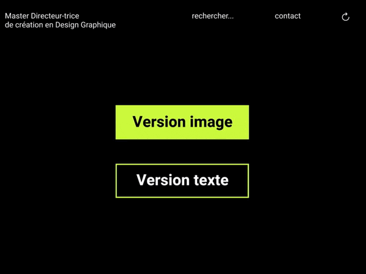
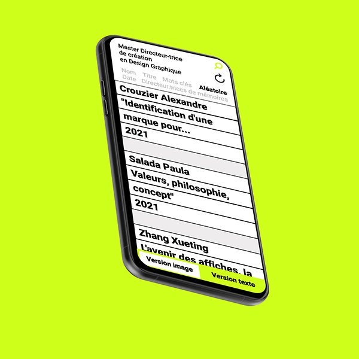
 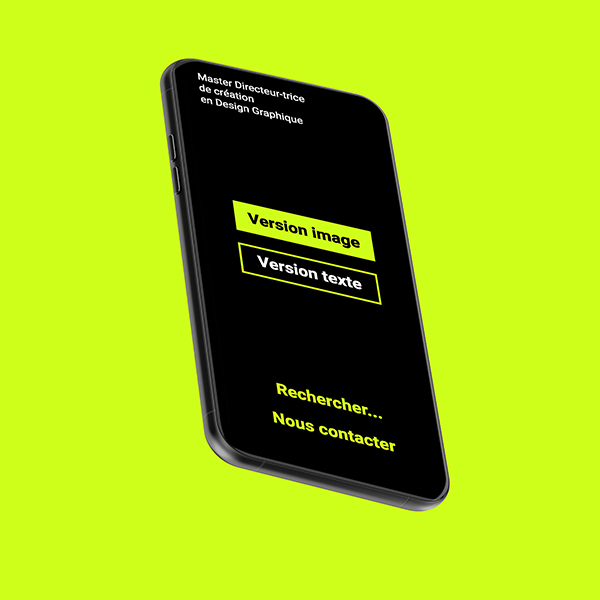
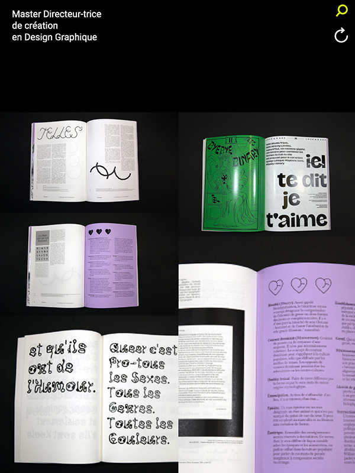
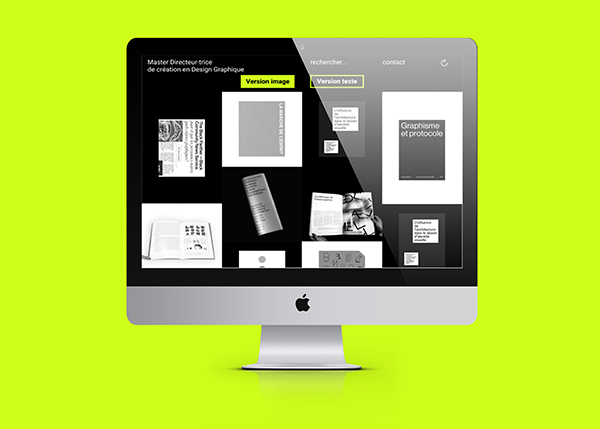
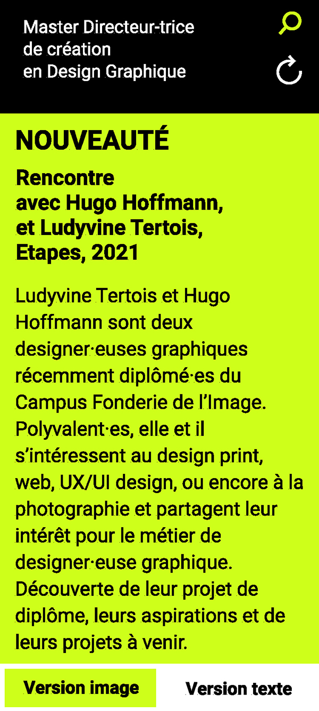
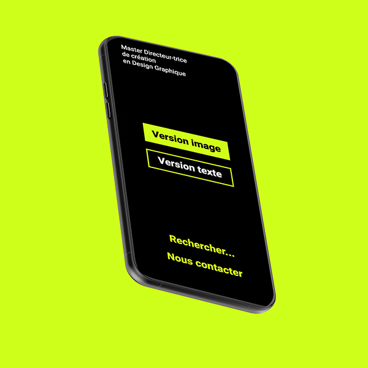
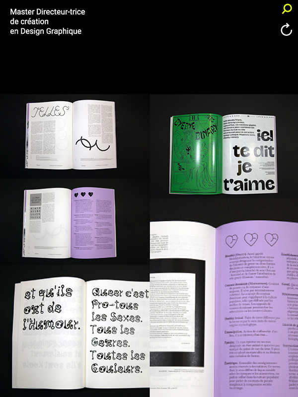
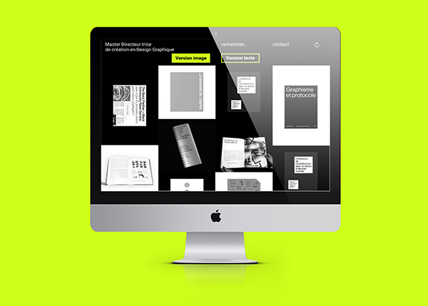
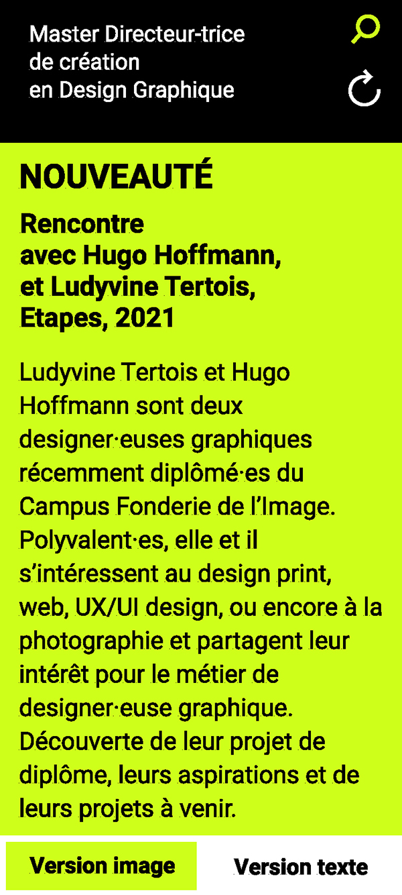
 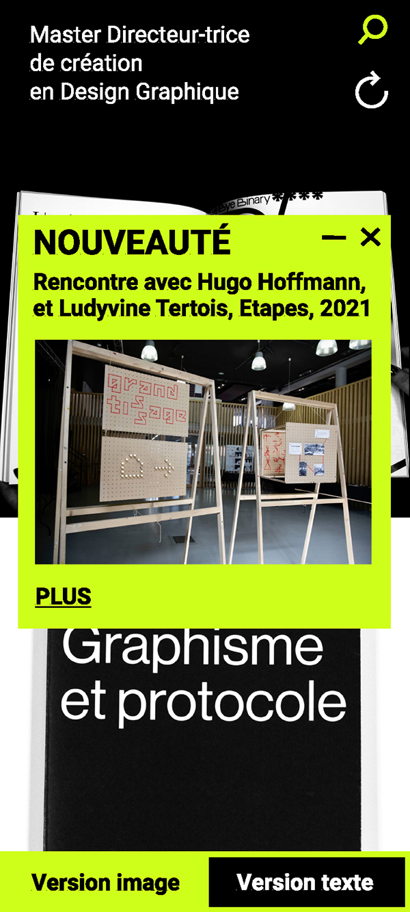
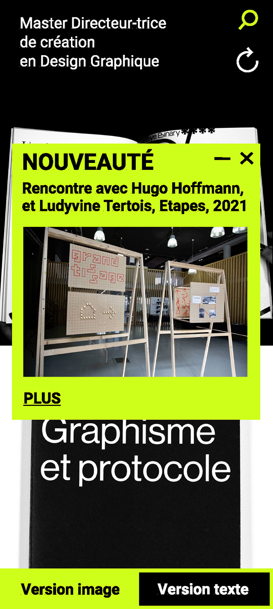
 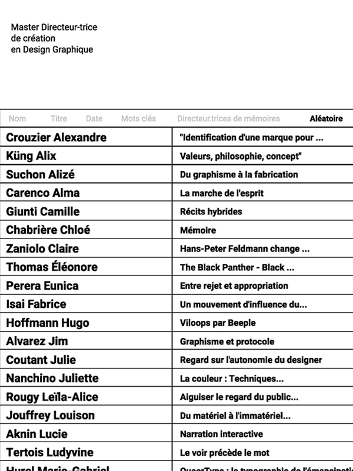
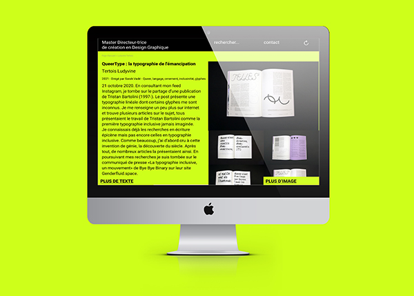
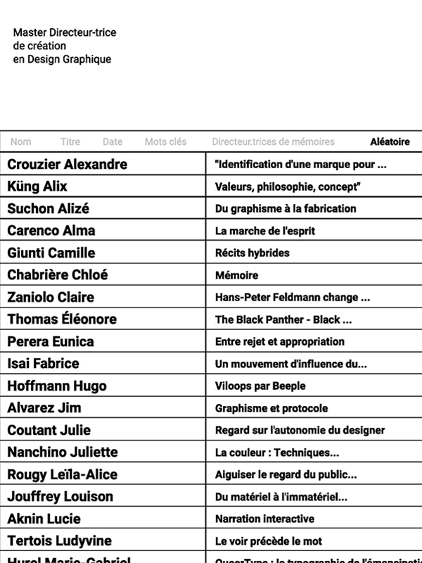
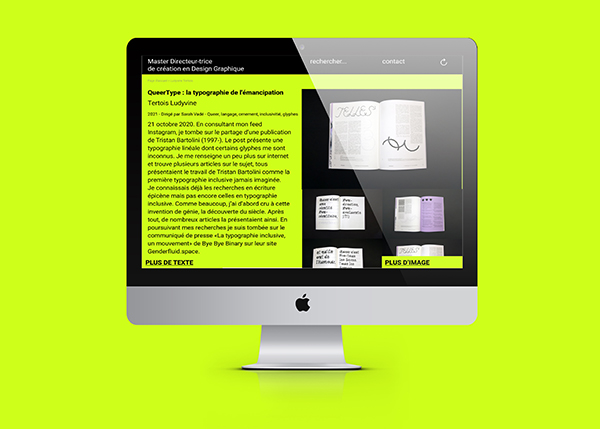